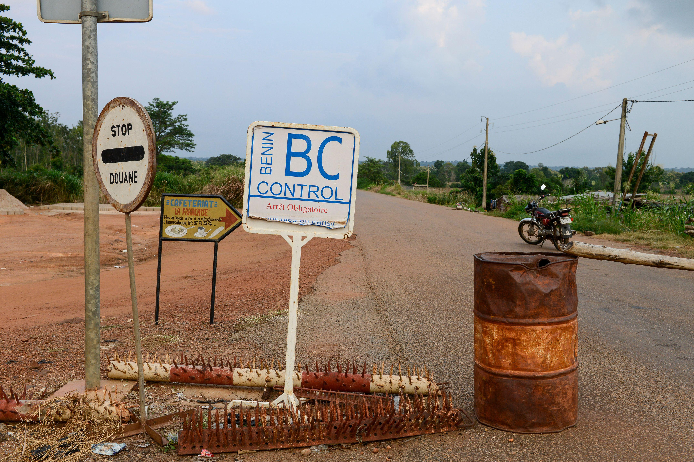
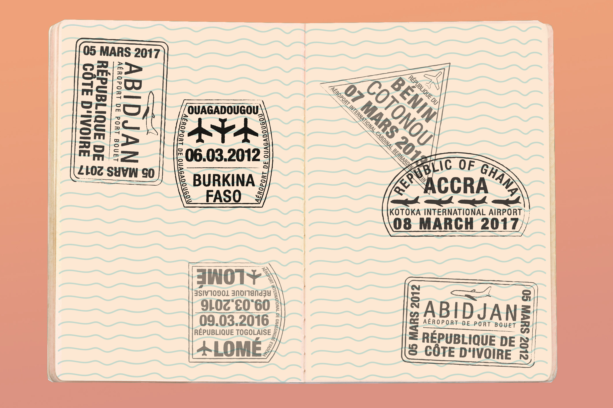
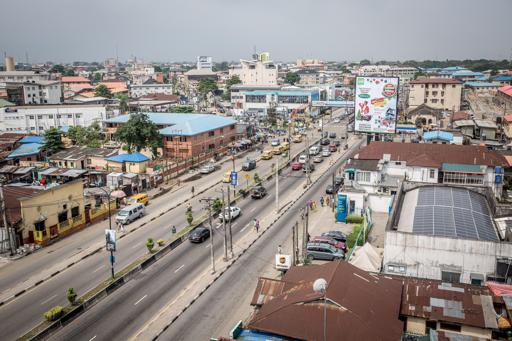
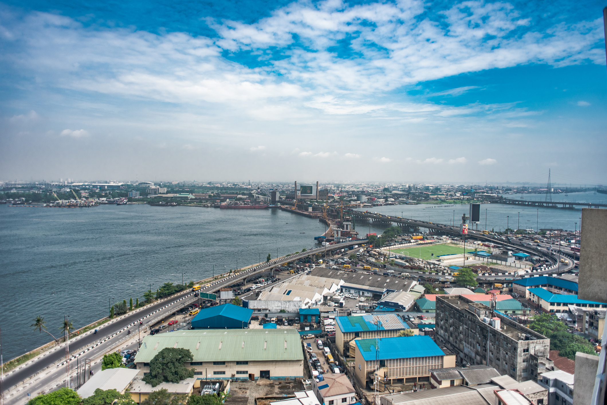
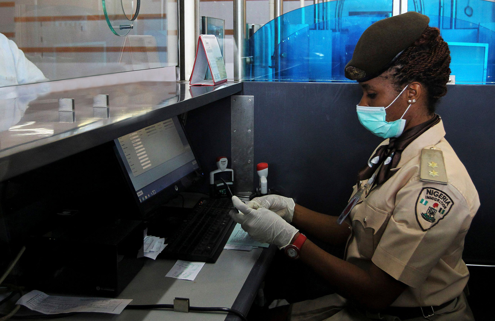
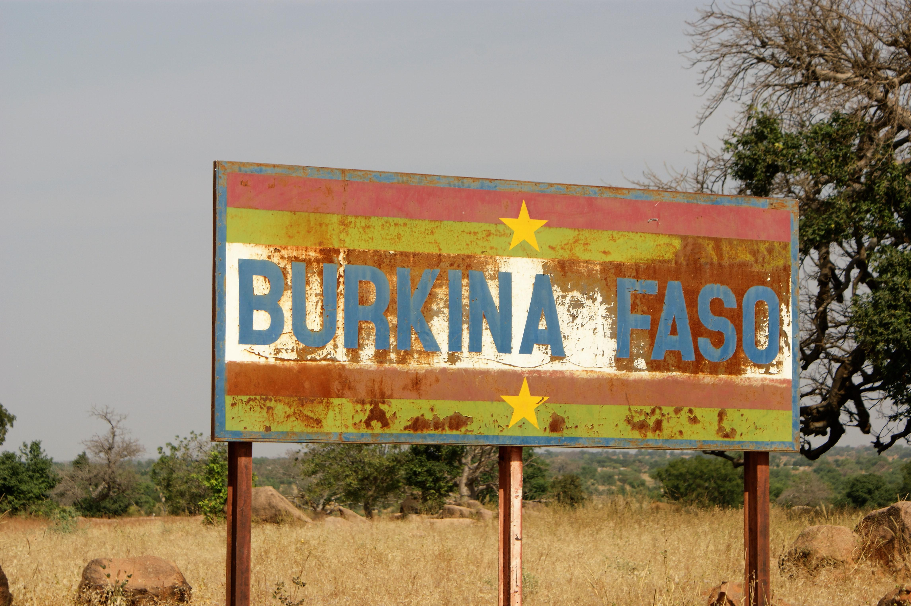
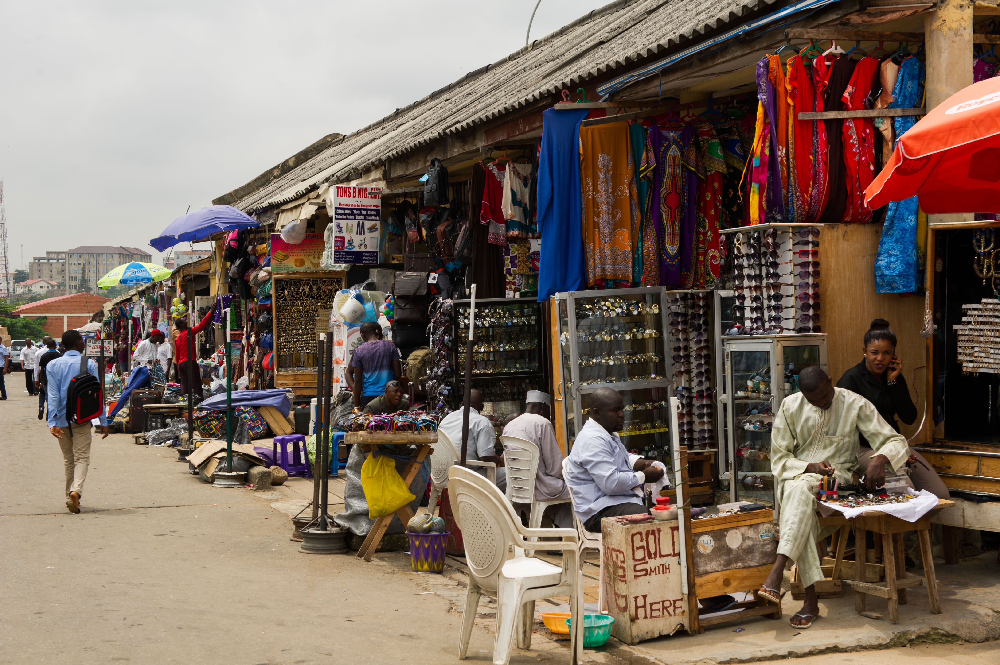

Opportunity Came Knocking
Ali is from the town of Kantchari, in Burkina Faso. He was working and completing a master's degree in Law at the University of Ouagadougou in 2004, when he was approached by a media company named All-Africa, which was seeking to open a branch in the city of Lagos, Nigeria. Ali finished his degree before heading to Lagos to accept the job. He had never been to Nigeria before, and was very curious to see what it was like, but he was also hesitant because of the uncertainty of not knowing what to expect. He moved from Ouagadougou to Lagos in 2005, traveling by road with all the requisite documents he would need.
Traveling Across Many Borders
There are many borders between Burkina Faso and Nigeria. Ali drove through Ivory Coast, Ghana, Togo and Benin to get to his destination. At times, he took a longer route through Ivory Coast; other times, he went through Togo or Benin. Because of the numerous borders, he developed a wealth of experience about freedom of movement in the region.

Threatened at the Border in Benin
Trained to be a lawyer, Ali is cognizant of ECOWAS freedom of movement rights. As a result, he often challenges immigration officers at the borders whenever he encounters extortion or harassment. His outspokenness has gotten him into standoffs with officers a few times. 
Press the play button to hear Ali talking about the intimidation he faced at the Beninois border on the way to Lagos.
Knowing the Rules
Ali's knowledge has helped him navigate through barriers and difficulties at the borders in the region. This has not only saved him money and time, but also saved other people who were stuck at those borders as well. Ali often tries to advocate for people who are being exploited by officers. 
Press the play button to hear Ali talking about the impact of knowledge on his travel experience.
"Because I am a trained lawyer and journalist, I know the rules, and I know that when you are an ECOWAS citizen, there is nothing like a payment to 'stamp your passport' for you to cross - provided you have all your documentation and medical stuff. You are free to move, but they are not doing that at the borders."
Working in Yaba
Once in Nigeria, Ali worked in Yaba, a popular suburb on the Lagos Mainland, which is known to have many educational institutions. While working in media, he also tapped into the need for French education in the city. He taught journalism to students in the French department at the University of Lagos (UNILAG). He also established a French language news program. His job in media takes him all over the continent, and he has had stints in Kenya, Tunisia, Senegal, Ethiopia, Cameroon, and elsewhere. 
Press the play button to hear Ali talking about registering his business in Lagos.
"In 2009, I set up my own business in media communication, which is mainly bilingual communication. I do translations. I do media reports. And I do fixing. Fixing is helping media people who are coming for a report in Nigeria to get in touch with relevant stakeholders, people to interview, and to conduct media reports."
Ali works with a diverse clientele, including Nigerian media, a Moroccan TV station in Abuja, Voice of America, France 24 and TV5, as well as Swiss and German media in the region.
Settling in the City
As time passed, Ali tried to adapt to life in Lagos. He lived in Dolphin Estate, one of the first gated communities in Lagos Island. He was supposed to leave Nigeria and join the All-Africa office in Dakar, Senegal, but he did not like the idea of moving from Lagos because the project he was doing at UNILAG was very fascinating. Without him, the project would have stopped. The French Embassy and the university asked him to stay, and he negotiated the terms and remained in Lagos. 
Freedom of Movement
Because of the demands of work, Ali travels a lot by road and crosses many regional borders in the process. He has made it a habit to address the issues he finds at the borders whenever he travels. 
Press the play button to hear Ali describe another confrontation with an immigration officer at the border.
Press the play button to hear Ali describe the reality at the border.
Region-Wide Struggles at the Border
In Ali's experience, difficulties at the border are region-wide, and even occur at the Burkina Faso border. 
Press the play button to listen to Ali describe other experiences crossing borders in different locations.
Education and Community in Lagos
After many years of living and working in Lagos, Ali felt at home. In 2015, he went back to school and received a Master’s Degree in Business from the Lagos Business School in Lekki, Lagos Island. He is an active member in the Burkinabe community in Lagos. In 2018, he was elected to be the Secretary General of the Association of Burkinabe Residents in Nigeria, and he was also the consular delegate in Lagos to the Conseil supérieur des Burkinabè de l’étranger.

The Burkinabe Community
As the Secretary General of the Association of Burkinabe Residents in Nigeria, Ali encourages and informs people in the community about how to abide by the immigration rules, how to register their businesses, and a host of related things. In Nigeria, people generally don't ask for documentation or where people come from - they assume Burkinabe people are from Northern Nigeria. 
Press the play button to hear Ali describe the Burkinabe community in Nigeria.
"People ask if I am from Sokoto and I say no. I say I am from Burkina Faso, and they are surprised. To me, it is a very open society. People are welcoming."
Thriving in Another West African City
Ali came to Lagos with the initial aim of spending only two years and then going back to Ouagadougou. However, he became inspired and found ways to better his professional experience in Lagos. This is part of the reason why he chose to attend Lagos Business School and complete an MBA.
Press the play button to hear Ali talk about the importance of the ECOWAS regional market and what it means for regional trade and migration.
 Click
Click